第 11 回 図を作る¶
所要時間の目安: 4 時間 / 前提: 第 1・2・4・5 回 (特に dataclass と文字列処理)
この回のゴール¶
読みやすい図 の条件 (番号・まとまり・色の意味・ラベル) を、説明できる。
SVG の最小の部品 (
rect・text・polyline・marker・viewBox) を、手で書ける。折れ線の途中の点 を求めるアルゴリズム (ラベルの位置) を、説明できる。
図を データ (dataclass) で定義し、そこから SVG と drawio の両方 を作る仕組みを、読める。
図の 重なり・はみ出し を、テストで検出する方法を、説明できる。
図の矢印を、実際のコードの依存と、一致させる 方法を、説明できる。
Mermaid の 標準の見た目 (init の行・5 色の
classDef) を、守る仕組みを、説明できる。新しい図を足す手順 を、実行できる。
1. 読みやすい図の条件¶
図は、文章で伝えにくい「つながり」と「順序」を、一目で伝える ために描きます。ところが、描けば読みやすくなる、わけではありません。 このリポジトリの図は、次の 3 つの 型 を、手本にして作り直しました。
型 |
特徴 |
使いどころ |
|---|---|---|
番号つきの流れ |
丸い番号が、実行の順を示す。矢印にひとこと添える |
手順・公開の流れ・ビルドの流れ |
まとまりの枠 (パネル) |
用途ごとに枠でくくり、枠に題名。部品は アイコン + 名前 + 等幅の説明 |
全体像・モジュールの地図 |
強調する経路 |
主な経路だけ 色を変える (オレンジ)。止まる所は赤 |
「ここが大事」を示したいとき |
そこから導いた 作図の約束 です。
約束 |
理由 |
|---|---|
1 枚の図で、1 つのこと を伝える |
欲張ると、線が交差して読めなくなる |
順序があるなら、1 から番号 を付ける |
矢印をたどらなくても、順が分かる |
関係の近い部品は、枠でくくる |
目が、まとまりで追える |
矢印の 色に意味 を持たせる (青 = 主・灰の破線 = 補助・オレンジ = 強調・赤の破線 = 止まる) |
凡例を読まなくても、重みが分かる |
矢印には、何が流れるか を添える |
「→」だけでは、意味が分からない |
部品は 名前 (太字) + 説明 (等幅・灰色) の 2 段 |
名前を先に拾い、必要なら説明を読める |
線は 直角に折る。交差は避ける |
斜めの線は、行き先が曖昧になる |
図の 矢印は、実際の依存と一致 させる |
図が嘘になると、読者が誤解する (テストで守る) |

手で描いた図は、コードが変わると、古くなります。そこで、図を データ で定義し、そこから 機械で作り、 元との ずれ を、テストで見つけます (第 0 回の「文書もコード」)。
実物を見ましょう。公開の流れの図です。
(番号 1〜7 が実行順。灰色のカードが処理、オレンジが外への反映。赤い文字は「止まる条件」。)
2. 図の種類を選ぶ¶
種類 |
向いているもの |
このリポジトリでの使い所 |
作り方 |
|---|---|---|---|
構成図 (diagrams.net) |
全体像・部品の配置・アイコン |
|
|
フローチャート (Mermaid) |
手順・判断の分かれ道 |
各文書の手順 |
Markdown の中に書く |
シーケンス図 (Mermaid) |
登場者どうしの、時間順のやりとり |
ビルドの呼び出し |
Markdown の中に書く |
表 |
属性の比較・対応 |
全体 |
Markdown |
選び方: ①配置や見た目に気を配りたい → 構成図。②文書の中で、文章と一緒に更新したい → Mermaid。③比べたいだけ → 表。 図が要らない場合 もあります。3 行で言えることは、文章で書きます。
3. SVG の基礎¶
SVG は、図を XML の文章 で表す形式です。拡大しても、ぼやけません。ブラウザでそのまま表示できます。
# 実行できる
import xml.dom.minidom
svg = """<svg xmlns="http://www.w3.org/2000/svg" width="300" height="120" viewBox="0 0 300 120">
<defs><marker id="arrow" viewBox="0 0 10 10" refX="9" refY="5" markerWidth="8" markerHeight="8" orient="auto-start-reverse"><path d="M0 0L10 5L0 10z" fill="#1a73e8"/></marker></defs>
<rect x="20" y="30" width="80" height="60" rx="12" fill="#ffffff" stroke="#d0d5dd"/>
<rect x="200" y="30" width="80" height="60" rx="12" fill="#ffffff" stroke="#d0d5dd"/>
<polyline points="100,60 200,60" fill="none" stroke="#1a73e8" stroke-width="2" marker-end="url(#arrow)"/>
<text x="60" y="65" text-anchor="middle" font-size="14">入力</text>
<text x="240" y="65" text-anchor="middle" font-size="14">出力</text>
</svg>"""
doc = xml.dom.minidom.parseString(svg) # XML として正しいか (壊れていれば例外)
for tag in ("rect", "polyline", "text", "marker"):
print(f"{tag:9}", len(doc.getElementsByTagName(tag)))
# 出力
rect 2
polyline 1
text 2
marker 1
部品 |
働き |
主な属性 |
|---|---|---|
|
図全体 |
|
|
四角 |
|
|
文字 |
|
|
折れ線 |
|
|
矢じり |
|
|
まとめ |
|
座標の向き: 左上が原点 (0, 0)。右が x の正、下が y の正 です (数学の座標と、y が逆)。
viewBox を width/height と同じにしておけば、座標は そのまま px です。このキットは、そうしています。
4. 文字幅の見積り¶
SVG では、文字がどれだけ横に伸びるか を、描く側が知る必要があります (ラベルの白い背景、カードの占有範囲、パネルの題名のタグ)。 ブラウザのように測れないので、見積り ます。
# 引用: tools/diagrams/kit.py::text_width
def text_width(text: str, size: float, mono: bool = False) -> float:
"""文字列の幅 (px) の見積り。全角は 1 文字ぶん、半角は約 0.55 (等幅は 0.6) 文字ぶん。
小数第 2 位に丸める。Python 3.12 から、浮動小数点の ``sum`` の誤差の出方が変わり、
丸めないと、版によって生成物 (.drawio / .svg) の末尾の桁が違ってしまう。
"""
ascii_w = 0.6 if mono else 0.55
return round(sum(size if unicodedata.east_asian_width(c) in "WF" else size * ascii_w for c in text), 2)
全角 (
W・F) は、フォントサイズと同じ幅。半角 は、約 0.55 倍 (等幅フォントは 0.6 倍)。
unicodedata.east_asian_width(c): 文字の 東アジア幅 の区分。日本語・全角記号はW/F、英数字はNa。
# 実行できる
import sys
from pathlib import Path
import docspipeline
sys.path.insert(0, str(Path(docspipeline.__file__).parents[1] / "tools" / "diagrams"))
from kit import text_width
print("構成図 (全角 3 文字, 15px) :", text_width("構成図", 15))
print("abc (半角 3 文字, 15px) :", round(text_width("abc", 15), 2))
print("abc (等幅 3 文字, 15px) :", round(text_width("abc", 15, mono=True), 2))
print("構成 abc (全角 2 + 半角 4, 15px):", round(text_width("構成 abc", 15), 2))
# 出力
構成図 (全角 3 文字, 15px) : 45
abc (半角 3 文字, 15px) : 24.75
abc (等幅 3 文字, 15px) : 27.0
構成 abc (全角 2 + 半角 4, 15px): 63.0
(構成 abc には、半角の空白が 1 つ含まれる。数えると、全角 2・半角 4。)
見積りの限界: フォントごとの正確な幅ではありません。そのため、余白を持たせ、次の節の 重なり検査 で、実際に当たっていないかを確かめます。
落とし穴: 浮動小数点の sum は、Python の版で、答えの末尾が違う
# 実行できる
print("小数第 2 位に丸めれば、版によらず:", round(sum([0.1] * 10), 2))
print("丸めた値どうしは、比べられる:", round(sum([0.1] * 10), 2) == round(0.1 * 10, 2))
# 出力
小数第 2 位に丸めれば、版によらず: 1.0
丸めた値どうしは、比べられる: True
(丸めずに 10 個の 0.1 を足すと、Python 3.11 では 0.9999999999999999、3.12 以降では 1.0 です。実際に、3 つの版で確かめました。)
Python 3.12 から、sum が浮動小数点の足し算の誤差を減らす計算 (補償つきの足し算) になりました。
そのため、text_width を丸めずに使うと、同じコードが、版によって 320.2 と 320.2000000000002 を作り、
生成した .drawio が、版ごとにずれます。CI は Python 3.11 と 3.13 の 両方 でテストするので、片方だけで作り直した図は、もう一方で落ちます。
そこで text_width は、小数第 2 位に丸めて 返します (誤差は 1e-13 程度なので、丸めの境目に当たることは、まず無い)。
実際に、このリポジトリで、3.11 でだけ test_generated_files_match_the_definitions が落ちて、見つかりました。
浮動小数点の結果を、文字列として保存・比較するときは、丸める のが定石です。
5. 折れ線の途中の点: ラベルの位置¶
矢印のラベルは、矢印の途中 に置きたい。折れ線は、いくつもの線分でできているので、 「全長の 50% の所」を求めるには、線分ごとの長さを足し引き します。

# 引用: tools/diagrams/kit.py::Diagram._path_point
@staticmethod
def _path_point(points: list[tuple[float, float]], t: float) -> tuple[float, float]:
segs = [(points[i], points[i + 1]) for i in range(len(points) - 1)]
lengths = [
abs(b[0] - a[0]) + abs(b[1] - a[1])
if (a[0] == b[0] or a[1] == b[1])
else ((b[0] - a[0]) ** 2 + (b[1] - a[1]) ** 2) ** 0.5
for a, b in segs
]
target = sum(lengths) * t
for (a, b), length in zip(segs, lengths, strict=True):
if target <= length or (a, b) == segs[-1]:
f = 0 if length == 0 else min(target / length, 1)
return a[0] + (b[0] - a[0]) * f, a[1] + (b[1] - a[1]) * f
target -= length
return points[-1]
読み解きましょう。
segs: 隣り合う点の組 = 線分の列。lengths: 各線分の長さ。縦横の線 (折れ線の多くはこれ) は、差の絶対値の和 で足りる。斜めは、ピタゴラスの定理 (√(dx² + dy²))。target = sum(lengths) * t: 全長のtの割合の所まで、あと何 px 歩くか。線分を順に見る。
target <= lengthなら、この線分の上 にある。そうでなければ、target -= lengthして次へ。最後の線分では、
(a, b) == segs[-1]により、必ず返す (浮動小数点の誤差で、取りこぼさないため)。length == 0(同じ点が続く) のときは、f = 0で 0 除算を避ける。min(target / length, 1)で、行き過ぎも防ぐ。
# 実行できる
import sys
from pathlib import Path
import docspipeline
sys.path.insert(0, str(Path(docspipeline.__file__).parents[1] / "tools" / "diagrams"))
from kit import Diagram
points = [(0, 0), (100, 0), (100, 50)] # 右へ 100、下へ 50: 全長 150
for t in (0, 0.5, 0.8, 1):
x, y = Diagram._path_point(points, t)
print(f"t={t:<4} → ({x:g}, {y:g})")
print("同じ点が続く:", Diagram._path_point([(0, 0), (0, 0), (60, 0)], 0.5))
# 出力
t=0 → (0, 0)
t=0.5 → (75, 0)
t=0.8 → (100, 20)
t=1 → (100, 50)
同じ点が続く: (30.0, 0.0)
t=0.5→ 目標 75。最初の線分 (長さ 100) の上で、(75, 0)。t=0.8→ 目標 120。最初の線分を過ぎ (残り 20)、2 本目 (長さ 50) の上で、(100, 20)。計算量: 線分の数
nに対してO(n)。図の矢印は、せいぜい数本の線分なので、問題にならない。
6. 図をデータで定義する¶
図の部品を、dataclass で表します (第 1 回)。
クラス |
表すもの |
主なフィールド |
|---|---|---|
|
用途ごとにまとめる枠 |
|
|
アイコン + 名前 + 説明 |
|
|
折れ線の矢印 |
|
|
補足の文字 |
|
|
1 枚の図 |
上の 4 つの一覧 + |
# 実行できる
import html
import sys
from pathlib import Path
import docspipeline
sys.path.insert(0, str(Path(docspipeline.__file__).parents[1] / "tools" / "diagrams"))
from kit import Card, Diagram, Edge, Panel
d = Diagram("demo", 400, 220)
d.panels.append(Panel(20, 20, 360, 180, "処理", tab=True))
d.cards += [
Card(100, 100, "入力", "docs/*.md", "doc", "#1a73e8", badge=1),
Card(300, 100, "出力", "_build/html", "globe", "#344054", badge=2),
]
d.edges.append(Edge([(134, 100), (266, 100)], "変換", "blue"))
drawio = d.to_drawio() # diagrams.net で開ける XML
svg = d.to_svg(drawio.strip()) # 文書に埋め込む SVG (元の XML を、中に持つ)
print("drawio の図形・矢印の数 :", drawio.count("<mxCell") - 2) # 先頭の 2 つ (id=0, 1) は枠組み
print("SVG の矢印 (polyline) :", svg.count("<polyline"))
print("SVG の文字 (text) :", svg.count("<text"))
embedded = html.unescape(svg.split('content="', 1)[1].split('"', 1)[0])
print("SVG が drawio を内蔵 :", embedded == drawio.strip())
# 出力
drawio の図形・矢印の数 : 13
SVG の矢印 (polyline) : 2
SVG の文字 (text) : 8
SVG が drawio を内蔵 : True
同じ定義から、2 つの形式 を作ります。
.drawio: diagrams.net で 開いて、手直しできる 元データ (XML)。.drawio.svg: 文書に 画像として埋め込む SVG。さらに、<svg content="...">の中に 元の.drawioを内蔵 している。 diagrams.net は、この SVG を そのまま開き直して、編集できる。
(.drawio だけをコミットすると、Sphinx は画像として表示できません。docspipeline check-diagrams が、.drawio に .drawio.svg が揃っているかを確かめます。)
描画の順序¶
to_svg の中は、描く順序が、前後関係を決めます (SVG は、後に書いたものが 手前 に出る)。

ラベルを最後 に描くのは、白い背景で 線を隠して、文字を読みやすく するため。
カードを矢印の後 に描くのは、矢印が カードの下に潜る ようにして、端がずれても目立たなくするため。
drawio の構造¶
.drawio は、<mxfile> の中に <mxGraphModel> があり、図形が <mxCell> として並びます。
# 抜粋: tools/diagrams/kit.py::Diagram.to_drawio
cells = ['<mxCell id="0"/>', '<mxCell id="1" parent="0"/>']
...
def add(value: str, style: str, x: float, y: float, w: float, h: float, vertex: bool = True) -> None:
...
f'<mxCell id="c{n}" value="{html.escape(value, quote=True)}" style="{style}" {kind} parent="1">'
f'<mxGeometry x="{x}" y="{y}" width="{w}" height="{h}" as="geometry"/></mxCell>'
...
f'<mxfile host="app.diagrams.net"><diagram id="{self.name}" name="{self.name}">{model}</diagram></mxfile>\n'
id="0"とid="1"は、diagrams.net の 決まった根 (レイヤー)。図形は
vertex="1"、矢印はedge="1"。位置は<mxGeometry>、見た目はstyleのキー=値;の並び。html.escape(value, quote=True): 文字に<・&・"が含まれても、XML が壊れない ように変換する (第 2 回)。
7. 図の品質をテストする¶
図は、描いたあと 目で見て確かめる 必要があります。ただ、人の目は、変更のたびに見直せません。 機械で見つけられる欠陥 (重なり・はみ出し) は、テストにします。
重なり¶
各カードの 占有範囲 (bbox: アイコンと文字を含む長方形) が、他と重なっていないかを調べます。
# 引用: tests/test_diagrams.py::_overlap
def _overlap(a, b, margin: float = 6) -> bool:
"""余白 (margin) を含めて重なるか。ぴったり接しているだけでも、読みにくいので重なりとみなす。"""
return a[0] < b[2] + margin and b[0] < a[2] + margin and a[1] < b[3] + margin and b[1] < a[3] + margin
2 つの長方形が重なる条件: x 方向 と y 方向の 両方 で、区間が重なる。
x 方向:
a の左 < b の右かつb の左 < a の右。y 方向も同じ。margin: ぴったり接する だけでも、読みにくいので、余白ぶん広げて判定する。
# 実行できる
import sys
from pathlib import Path
import docspipeline
sys.path.insert(0, str(Path(docspipeline.__file__).parents[1] / "tools" / "diagrams"))
from kit import Card
def overlap(a, b, margin=6):
return a[0] < b[2] + margin and b[0] < a[2] + margin and a[1] < b[3] + margin and b[1] < a[3] + margin
def collisions(cards):
return [(a.label, b.label) for i, a in enumerate(cards) for b in cards[i + 1 :] if overlap(a.bbox, b.bbox)]
roomy = [Card(100, 100, "入力", "docs/*.md"), Card(300, 100, "出力", "_build/html")]
tight = [Card(100, 100, "入力", "docs/*.md"), Card(150, 100, "出力", "_build/html")]
print("間隔が十分 :", collisions(roomy))
print("間隔が足りない :", collisions(tight))
print("入力のカードの占有範囲 (左, 上, 右, 下):", tuple(round(v, 1) for v in roomy[0].bbox))
# 出力
間隔が十分 : []
間隔が足りない : [('入力', '出力')]
入力のカードの占有範囲 (左, 上, 右, 下): (68.0, 68.0, 132.0, 178.0)
はみ出し¶
キャンバス: カード・パネル・矢印の点が、
0 〜 幅/0 〜 高さの中にあるか。パネル: パネルの中に置いたカードの文字が、枠の外に出ていない か。
# 引用: tests/test_diagrams.py::test_cards_stay_inside_their_panel
@pytest.mark.parametrize("name", NAMES)
def test_cards_stay_inside_their_panel(name):
d = build_diagrams.DIAGRAMS[name]()
for c in d.cards:
containing = [p for p in d.panels if p.x <= c.cx <= p.x + p.w and p.y <= c.cy <= p.y + p.h]
for p in containing:
left, _top, right, bottom = c.bbox
assert left >= p.x and right <= p.x + p.w and bottom <= p.y + p.h, (
f"{name}: {c.label} が {p.title} からはみ出す"
)
(parametrize で、4 枚の図すべてに、同じ検査をする。)
生成物のずれ¶
# 引用: tests/test_diagrams.py::test_svg_embeds_the_drawio_source_and_both_are_valid_xml
@pytest.mark.parametrize("name", NAMES)
def test_svg_embeds_the_drawio_source_and_both_are_valid_xml(name):
drawio = (ROOT / "docs" / "diagrams" / f"{name}.drawio").read_text(encoding="utf-8")
svg = (ROOT / "docs" / "diagrams" / f"{name}.drawio.svg").read_text(encoding="utf-8")
xml.dom.minidom.parseString(drawio)
xml.dom.minidom.parseString(svg)
assert unescape(svg.split('content="', 1)[1].split('"', 1)[0]) == drawio.strip()
両方が、正しい XML として読める。
SVG の中に内蔵した XML が、
.drawioと 一致 する。SVG だけを手で直す と、ここで落ちる。
test_generated_files_match_the_definitions は、build_diagrams.main(["--check"]) を呼び、
定義から作り直した結果 と、コミットしたファイルが 一致 するかを確かめます。
定義を変えて、作り直しを忘れると、ここで落ちます。
8. 図を、実際のコードと一致させる¶
構成図の中で、最も 嘘になりやすい のは、依存の矢印 です。コードを変えても、図は、自然には直らないから。
module-map の矢印は、実際の依存と、同じ読み取りで突き合わせて います (第 5 回の docspipeline map)。
# 引用: tests/test_diagrams.py::_real_edges
def _real_edges(kind: str) -> set[tuple[str, str]]:
from docspipeline import structure_map
graph = structure_map.scan_package(ROOT / "docspipeline")
prefix = "docspipeline."
return {
(src.removeprefix(prefix), dst.removeprefix(prefix))
for src, dst in graph.edges(kind)
if src != "docspipeline.__main__" # python -m の入口だけの依存は、図に描かない
}
# 引用: tests/test_diagrams.py::test_module_map_imports_match_the_real_imports
def test_module_map_imports_match_the_real_imports():
drawn = set(build_diagrams.MODULE_IMPORTS)
real = _real_edges("import")
assert drawn - real == set(), f"実際には無い依存を描いている: {sorted(drawn - real)}"
missing = {e for e in real - drawn if e[1] not in build_diagrams.UTILITY_MODULES}
assert missing == set(), f"図に無い依存がある (MODULE_IMPORTS に足す): {sorted(missing)}"
2 つの集合の 差 を、両方向で調べます。
drawn - real: 図にあって、実際に無い = 嘘の矢印 (もう無い依存を、描き続けている)。real - drawn: 実際にあって、図に無い = 描き漏れ (新しい依存を、足し忘れた)。ただし、共通部品 (files) への矢印は、図を埋めてしまうので、省く (UTILITY_MODULES)。
# 実行できる
import sys
from pathlib import Path
import docspipeline
from docspipeline import structure_map
root = Path(docspipeline.__file__).parent
sys.path.insert(0, str(root.parent / "tools" / "diagrams"))
import build_diagrams
prefix = "docspipeline."
graph = structure_map.scan_package(root)
real = {
(s.removeprefix(prefix), d.removeprefix(prefix))
for s, d in graph.edges("import")
if s != "docspipeline.__main__"
}
drawn = set(build_diagrams.MODULE_IMPORTS)
print("図の矢印の数 :", len(drawn))
print("嘘の矢印 :", sorted(drawn - real))
print("描き漏れ :", sorted(e for e in real - drawn if e[1] not in build_diagrams.UTILITY_MODULES))
drawn_with_a_lie = drawn | {("config", "cli")} # わざと、実際には無い矢印を足す
print("嘘を足した場合 :", sorted(drawn_with_a_lie - real))
# 出力
図の矢印の数 : 11
嘘の矢印 : []
描き漏れ : []
嘘を足した場合 : [('config', 'cli')]
本物の図は、嘘も描き漏れも無い (両方
[])。わざと足した矢印
config → cliは、嘘の矢印として検出 される (実際には、configが import するのはconfluenceだけ。cliとconfigの間に、import の関係は無い)。
図を最新に保つ最も確実な方法は、「ずれたら、テストが落ちる」ようにすること です。
9. Mermaid の標準の見た目¶
文書の中の手順やフローは、Mermaid で書きます。1 つの図を、2 つの場所 で、同じ見た目にする必要があります。
表示される場所 |
描くのは |
見た目の指定元 |
|---|---|---|
GitHub (Markdown のまま) |
GitHub の Mermaid |
ブロックの 1 行目の |
Sphinx の HTML |
|
|
両者の見た目を、同じ値 から作ります。
# 抜粋ファイル: docspipeline/mmdc.py
FONT_FAMILY = "Noto Sans JP, Hiragino Sans, Meiryo, sans-serif"
THEME_VARIABLES = {
"fontFamily": FONT_FAMILY,
"primaryColor": "#ffffff",
"lineColor": "#667085",
"clusterBkg": "#f2f4f7",
FLOWCHART_CONFIG = {"wrappingWidth": 480, "nodeSpacing": 40, "rankSpacing": 56, "padding": 14}
SEQUENCE_CONFIG = {"mirrorActors": False, "wrap": False, "width": 150, "actorMargin": 30, "messageMargin": 34}
MERMAID_INIT = (
"%%{init: "
設定 |
目的 |
|---|---|
|
色を、構成図 (diagrams.net) と 揃える |
|
文字のフォントを、日本語に対応したものに。最上位に置かないと、効かない |
|
日本語の長い行が、単語の途中で折り返される のを防ぐ |
|
順序図の幅を詰め、下に同じ参加者を繰り返さない |
|
文字を |
5 色の classDef¶
部品の 役割 を色で示します。色の意味は、図が変わっても、同じ です。
# 抜粋ファイル: docspipeline/mmdc.py
classDef input fill:#dae8fc,stroke:#1a73e8,color:#101828
classDef proc fill:#e6f4f1,stroke:#0f9d8a,color:#101828
classDef out fill:#fff7ed,stroke:#e8710a,color:#101828
classDef stop fill:#fef3f2,stroke:#d92d20,color:#101828
classDef plain fill:#ffffff,stroke:#d0d5dd,color:#101828"""
クラス |
色 |
意味 |
|---|---|---|
|
青 |
入力・始まり |
|
緑 |
Sphinx・処理 |
|
オレンジ |
出力・公開 |
|
赤 |
止まる・失敗 |
|
白 |
補助 |
使うときは、ノードに :::クラス名 を付けます (A["開始"]:::input)。
1 行目を、機械で揃える¶
%%{init: ...}%% の行は、長く、手で写すと間違える 行です。コマンドで確かめ、入れます。
# 引用: docspipeline/mmdc.py::check_mermaid_text
def check_mermaid_text(text: str) -> list[int]:
"""標準の ``%%{init}%%`` の行で始まっていない Mermaid ブロックの、開きの行 (1 始まり) を返す。"""
lines = text.splitlines()
missing = []
for start, end in mermaid_blocks(lines):
first = _first_content_line(lines, start, end)
if first is None or lines[first].strip() != MERMAID_INIT:
missing.append(start + 1)
return missing
# 引用: docspipeline/mmdc.py::fix_mermaid_text
def fix_mermaid_text(text: str) -> str:
"""標準の ``%%{init}%%`` の行を、全ブロックの先頭に入れる。
別の ``%%{init ...}%%`` で始まるブロックは、標準の行に置き換える。
"""
lines = text.split("\n")
for start, end in reversed(mermaid_blocks(lines)):
indent = _FENCE_OPEN.match(lines[start]).group("indent") # type: ignore[union-attr]
first = _first_content_line(lines, start, end)
if first is not None and lines[first].strip().startswith("%%{init"):
lines[first] = indent + MERMAID_INIT
elif first is None or lines[first].strip() != MERMAID_INIT:
lines.insert(start + 1, indent + MERMAID_INIT)
return "\n".join(lines)
mermaid_blocks: コードブロックの囲み (```や~~~、:::{mermaid}) を探す (第 2 回の正規表現と、囲みの長さの扱い)。check_mermaid_text: 各ブロックの 最初の中身の行 が、標準の行と一致するか。違う行番号の一覧を返す。fix_mermaid_text: 後ろのブロックから 順に直す (行を挿入すると、後ろの行番号がずれるため。第 2 回の「後ろから置換」と同じ考え方)。別の%%{initで始まるものは、標準に置き換える。
# 実行できる
from docspipeline.mmdc import MERMAID_INIT, check_mermaid_text, fix_mermaid_text
text = "説明\n\n```mermaid\nflowchart LR\n A --> B\n```\n"
print("直す前: 足りないブロックの開きの行 =", check_mermaid_text(text))
fixed = fix_mermaid_text(text)
print("直した後: 足りないブロック =", check_mermaid_text(fixed))
print("ブロックの 1 行目が標準の行? =", fixed.splitlines()[3] == MERMAID_INIT)
print("もう一度直しても同じ (冪等)? =", fix_mermaid_text(fixed) == fixed)
print("標準の行の長さ =", len(MERMAID_INIT), "文字")
# 出力
直す前: 足りないブロックの開きの行 = [3]
直した後: 足りないブロック = []
ブロックの 1 行目が標準の行? = True
もう一度直しても同じ (冪等)? = True
標準の行の長さ = 537 文字
冪等 (べきとう): 何度実行しても、結果が同じ。--fix を、毎回の CI や、手元で、安心して回せます。
docspipeline check-mermaid docs # 標準の行が無いブロックを、一覧する (CI で使う)
docspipeline check-mermaid docs --fix # 全ブロックに、標準の行を入れる
docspipeline mermaid-style # 標準の行と classDef の組を表示する (貼り付け用)
10. 新しい図を足す手順¶

構成図の関数の骨組みです (build_internals の冒頭)。
# 抜粋: tools/diagrams/build_diagrams.py::build_internals
def build_internals() -> Diagram:
d = Diagram("build-internals", 1200, 700)
d.panels += [Panel(40, 40, 1120, 600, "ビルドの流れ", "sphinx -b html docs (docspipeline build の中身)")]
d.cards += [
Card(130, 200, "ビルドを始める", "docspipeline build", "terminal", GRAY, badge=1),
d.edges += [
Edge([(164, 200), (346, 200)], "実行", "blue"),
return d
座標の決め方のコツ
まず、列と行の格子 を決める (例: x = 130, 380, 630, 880 / y = 200, 450)。
カードの中心を格子に置く。カードの大きさは 64px なので、矢印は、中心 ± 34px から出して入れる (端に、少し隙間を空ける)。
折り返す矢印は、他のカードを避ける通り道 (上の例では、y = 340 の帯) を決めてから、点を並べる。
描いたら、画像にして見る (ブラウザで開く)。テストは重なりを見つけるが、読みやすさ は、人が確かめる。
よくある失敗
失敗 |
原因 |
対策 |
|---|---|---|
文字が、枠からはみ出す |
|
説明を短く、または |
矢印が、カードの上を横切る |
通り道を決めていない |
折れ線の点を足して迂回する |
ラベルが、矢印の曲がり角に重なる |
|
|
図が大きすぎて、文字が小さい |
1 枚に詰め込みすぎ |
図を分ける (全体像 / 詳細) |
SVG だけを直して、 |
手で編集した |
定義を直して作り直す。テストが検出する |
ハンズオン¶
python tools/diagrams/build_diagrams.pyを実行し、git statusで、差分が無い (決定的に作られる) ことを確かめる。tools/diagrams/build_diagrams.pyのpublish_flowで、カード 1 つのcxを わざと 30 動かして、pytest tests/test_diagrams.pyを実行する。落ちるテストの名前を読む (元に戻すこと)。MODULE_IMPORTSに、実際には無い("config", "cli")を足して、pytest tests/test_diagrams.py::test_module_map_imports_match_the_real_importsが落ちる様子を見る (戻すこと)。手元の Markdown に、標準の行の無い Mermaid ブロックを書き、
docspipeline check-mermaidで検出し、--fixで直す。
確認問題¶
SVG の座標で、y の向きは、数学の座標と、どう違いますか。
viewBoxとwidth/heightが、同じ値のとき、座標は何の単位になりますか。折れ線
[(0,0), (100,0), (100,50)]の、全長の 80% の点は、どこですか。計算を示してください。_path_pointで、最後の線分にor (a, b) == segs[-1]がある理由を説明してください。2 つの長方形が重なる条件を、x 方向と y 方向に分けて説明してください。
図の矢印と実際の依存の一致を、2 方向の差 で調べるのは、なぜですか。それぞれ、何を検出しますか。
SVG の中に、元の
.drawioを内蔵する利点は何ですか。fix_mermaid_textが、後ろのブロックから 直すのは、なぜですか。(書く問題)
Edgeのlabel_t=0.5の位置の点を、Diagram._path_pointを使わずに、縦横の線分だけの折れ線 について計算する関数midpoint(points)を書いてください。[(0,0), (100,0), (100,50)]で(75, 0)を返すこと。
解答¶
数学の座標は、y が 上向きに増える が、SVG は 下向きに増える (左上が原点)。
px (画面の点)。
全長 = 100 + 50 = 150。80% → 120。最初の線分 (100) を過ぎ、残り 20 を、2 本目 (長さ 50) の上で歩く。20 ÷ 50 = 0.4 →
(100, 0 + 50 × 0.4)=(100, 20)。浮動小数点の誤差で、
targetが全長を わずかに超える と、どの線分のtarget <= lengthも成り立たず、ループを抜けてしまう。 最後の線分では 必ず返す ことで、取りこぼさない (min(..., 1)で、行き過ぎも防ぐ)。x 方向:
a の左 < b の右かつb の左 < a の右。y 方向も同じ。両方 成り立つとき、重なる。drawn - realは 嘘の矢印 (もう無い依存を描き続ける)、real - drawnは 描き漏れ (新しい依存を足し忘れ)。片方向だけでは、もう一方を見逃す。1 つのファイル で、見た目 (SVG) と編集用の元データを持てる。diagrams.net で そのまま開き直せる ので、元の
.drawioを別に探さなくてよい。 ただし、SVG だけを手で直すと食い違うので、テストで検出する。行を 挿入 すると、後ろの行の番号が ずれる から。後ろから直せば、前のブロックの位置は変わらない。
例 (実行して確かめてある):
# 実行できる
def midpoint(points):
lengths = [abs(b[0] - a[0]) + abs(b[1] - a[1]) for a, b in zip(points, points[1:], strict=False)]
target = sum(lengths) / 2
for (a, b), length in zip(zip(points, points[1:], strict=False), lengths, strict=True):
if target <= length:
f = target / length if length else 0
return a[0] + (b[0] - a[0]) * f, a[1] + (b[1] - a[1]) * f
target -= length
return points[-1]
print(midpoint([(0, 0), (100, 0), (100, 50)]))
print(midpoint([(0, 0), (0, 40)]))
# 出力
(75.0, 0.0)
(0.0, 20.0)
(縦横の線だけなので、長さは |dx| + |dy| で足ります。斜めの線がある場合は、ピタゴラスの定理が要ります。)
まとめ¶
概念 |
要点 |
このリポジトリでの例 |
|---|---|---|
読みやすい図 |
番号・まとまり・色の意味・ラベル |
3 つの型 |
SVG |
|
|
文字幅の見積り |
全角 = 1、半角 ≒ 0.55 |
|
折れ線の途中の点 |
線分の長さを足し引き。 |
|
図をデータで |
dataclass → SVG と drawio |
|
図のテスト |
重なり・はみ出し・生成物の一致 |
|
図とコードの一致 |
2 方向の差 |
|
Mermaid の標準 |
init の行 + 5 色の classDef。機械で揃える |
|
次回¶
第 12 回 CI と運用: ここまでの検査を 自動で回す 仕組み (CI) と、HTML 版の配布・運用の手順をまとめます。